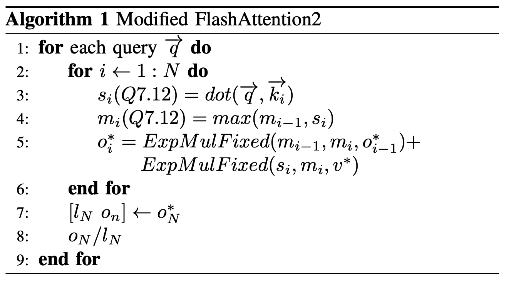
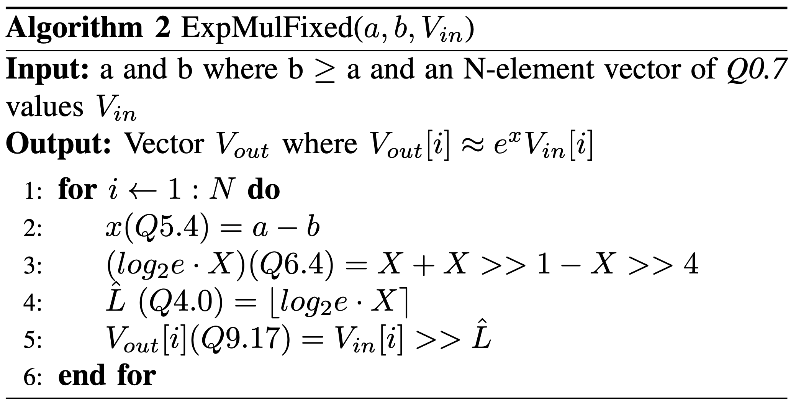
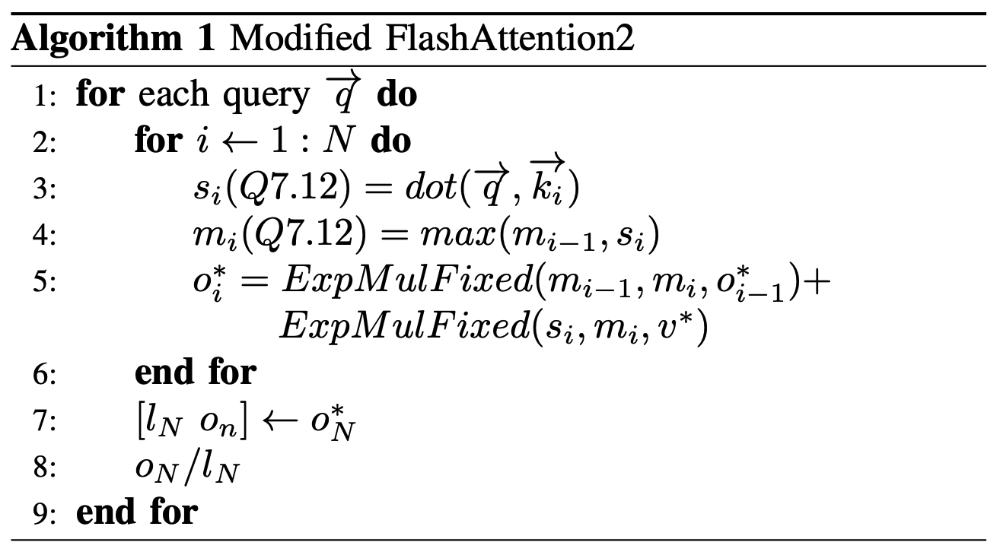
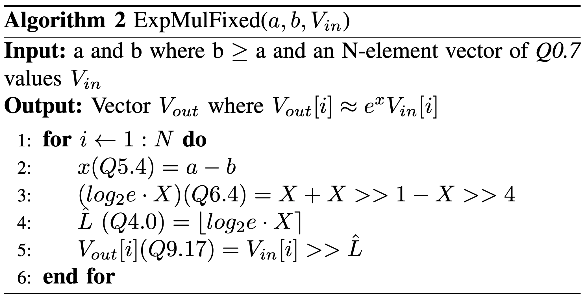

flashattention-asic-accelerator
 



overview
We present a novel fixed-point ASIC accelerator for edge platforms that implements an IO-aware algorithm that tiles Q, K, and V matrices and fuses softmax operations with surrounding matrix multiplications. We design the quantization scheme, datapath, and control such that all major components of the attention pipeline - including dot-product, softmax nor- malization, and value accumulation - operate in fixed point while preserving high numerical fidelity.
The design operates at a 2.6ns clock period, or about 385 MHz. We implement memory management using a streaming, tile-based organization that minimizes off-chip bandwidth while keeping the PE Block fully utilized.
Our experimental results show that our design significantly reduces power and area consumption relative to prior FlashAttention accelerators, making A.U.R.A. particularly well suited for edge deployments that require transformer-class models under tight energy and area budgets.
tools
- verilog / systemverilog, tcl, verdi, bash, systemverilog assertions (sva)